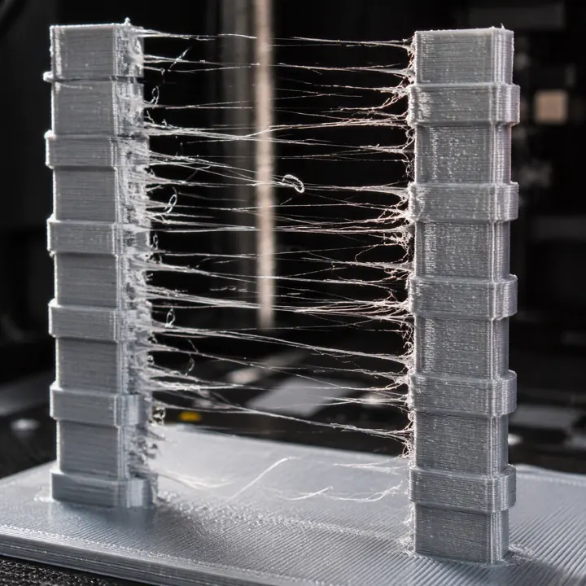

Konfiguration
Drucker-Datenblatt
Herstellerprofil
Profilinformationen
Praxis-Hinweis
Automatische Fehleranalyse 41 Fehlerbilder
Die Diagnose bezieht das aktuell gewählte Drucker- und Filamentprofil ein. Wähle das sichtbare Fehlerbild und starte die Analyse.

Fotodiagnose
Foto lokal laden, sichtbare Merkmale markieren und mögliche Druckfehler priorisieren lassen.
Das Foto wird ausschließlich lokal im Browser verarbeitet und nicht hochgeladen.
Noch kein Foto ausgewählt.
Mögliche Fehlerbilder
Die Fotodiagnose ist eine lokale, merkmalsbasierte Vorauswahl und keine KI-Bilderkennung. Das wahrscheinlichste Ergebnis wird automatisch in die Fehleranalyse übernommen.
Priorität: Mittel
Diagnose
Diagnose-Sicherheit0 %
Korrekturprofil wurde erstellt und ist für den Export vorbereitet.
Kalibrierungscenter
Dokumentiere reale Testergebnisse für die aktuell gewählte Drucker-Filament-Kombination. Gespeicherte Werte können anschließend in einem persönlichen Profil verwendet werden.
Aktueller Kontext
Wähle einen Testtyp und trage das beste Testergebnis ein.
Gespeicherte Kalibrierungen
Meine Profile & Datensicherung
Speichere persönliche Druckprofile lokal im Browser und sichere sämtliche Profile und Kalibrierungen als JSON-Datei.
Aktuelles Profil speichern
Backup & Wiederherstellung
Das Backup enthält persönliche Profile, Kalibrierungen und die App-Version. Filament- und Druckerdatenbank bleiben Bestandteil der App.
Gespeicherte Profile
Impressum & Datenschutz
Rechtliche Informationen zu LayerForge. Die markierten Platzhalter müssen vor der Veröffentlichung durch die tatsächlichen Betreiberangaben ersetzt und rechtlich geprüft werden.
Impressum
LayerForge
Persönliche Kontakt- und Adressdaten wurden aus dieser App-Version entfernt.
Datenschutzerklärung
LayerForge ist als lokale Browser-Anwendung ausgelegt. Auswahlwerte, Profile und Einstellungen werden innerhalb der Anwendung verarbeitet.
Lokal verarbeitete Daten
- ausgewählte Drucker- und Filamentprofile
- Kalibrierungs- und Optimierungswerte
- Fehleranalyse und Korrekturprofile
- lokal ausgewählte Bilder für die Fotodiagnose
Nach aktuellem Funktionsstand werden Fotos lokal im Browser verarbeitet und nicht durch LayerForge hochgeladen. Externe Herstellerseiten werden erst geöffnet, wenn ein entsprechender Link aktiv angeklickt wird.
Lokale Speicherung
Soweit der Browser Daten lokal speichert oder Downloads erzeugt, verbleiben diese grundsätzlich auf dem Gerät des Nutzers. Browserdaten können über die Einstellungen des verwendeten Browsers gelöscht werden.
Cookie-Hinweis und Einwilligungsstatus
LayerForge setzt derzeit keine Analyse- oder Marketing-Cookies ein. Die App nutzt technisch notwendige lokale Browserspeicherung, insbesondere für persönliche Profile, Kalibrierungen und die Speicherung der Auswahl im Cookie-Hinweis. Diese Daten verbleiben auf dem verwendeten Gerät und können über die Browser-Datenverwaltung oder die Funktion „Lokale Daten löschen“ entfernt werden.
Vor Veröffentlichung prüfen, ob Hosting, Statistikdienste, Cookies, externe Schriftarten, Formulare oder Cloud-Funktionen ergänzt wurden. In diesem Fall muss diese Datenschutzerklärung angepasst werden.
PayPal-Spenden
Beim Anklicken des PayPal-Spendenbuttons wird eine Verbindung zu den Servern von PayPal hergestellt. Dabei können technische Informationen wie IP-Adresse, Browserinformationen, Geräteinformationen sowie transaktionsbezogene Daten durch PayPal verarbeitet werden.
Die Zahlungsabwicklung erfolgt ausschließlich auf den Systemen von PayPal. LayerForge erhält keinen Zugriff auf Zahlungsdaten wie Kreditkarten- oder Bankinformationen.
Es gelten die Datenschutzbestimmungen von PayPal: PayPal Datenschutzerklärung.
Nutzerrechte
Nutzer haben im Rahmen der anwendbaren Datenschutzgesetze insbesondere folgende Rechte:
- Recht auf Auskunft über gespeicherte Daten
- Recht auf Berichtigung unrichtiger Daten
- Recht auf Löschung von Daten
- Recht auf Einschränkung der Verarbeitung
- Recht auf Datenübertragbarkeit, soweit anwendbar
- Recht auf Widerspruch gegen bestimmte Verarbeitungen personenbezogener Daten
- Recht auf Widerruf erteilter Einwilligungen mit Wirkung für die Zukunft
- Recht auf Beschwerde bei der zuständigen Aufsichtsbehörde
Da LayerForge personenbezogene Daten grundsätzlich lokal im Browser speichert, können viele Daten direkt durch den Nutzer über die Funktionen der App oder die Browserdatenverwaltung gelöscht werden.
Haftungsausschluss
Die in LayerForge ausgegebenen Druckparameter, Kompatibilitätsbewertungen und Fehlerdiagnosen sind Empfehlungen und Ausgangswerte. Ergebnisse können insbesondere durch Druckermodell, Hardwarezustand, Filamentcharge, Farbe, Düsendurchmesser und Umgebungsbedingungen abweichen.
Alle Einstellungen sind vor dem produktiven Einsatz mit geeigneten Testdrucken zu prüfen. Sicherheitsgrenzen des Drucker- und Filamentherstellers sind einzuhalten.
Eine Haftung für Fehldrucke, Materialverluste, Betriebsunterbrechungen oder Schäden kann nur im gesetzlich zulässigen Umfang ausgeschlossen werden. Dieser Text ersetzt keine individuelle Rechtsberatung.
Quellen, Marken und Produktnamen
Die App verwendet Informationen aus Herstellerangaben, technischen Datenblättern, Materialdatenblättern und ergänzenden Plausibility Profileen. Der jeweilige Profilstatus und die Datenqualität zeigen an, wie belastbar die Angaben sind.
Alle genannten Marken, Logos, Produktnamen und Unternehmensbezeichnungen gehören ihren jeweiligen Rechteinhabern. Ihre Nennung dient ausschließlich der Identifikation kompatibler Produkte. Es besteht keine automatische Verbindung, Partnerschaft oder Freigabe durch die genannten Hersteller.
LayerForge unterstützen
LayerForge wird laufend weiterentwickelt. Wenn dir die App hilft, kannst du die Entwicklung freiwillig über PayPal unterstützen.
Unterstütze LayerForgeDie Zahlung wird auf der PayPal-Website abgewickelt. Betrag und Zahlungsart wählst du dort selbst.
PayPal-Datenschutz: https://www.paypal.com/de/webapps/mpp/ua/privacy-full
Wichtiger Hinweis vor der Veröffentlichung
Dieses Muster enthält bewusst Platzhalter. Ergänze mindestens den Namen des Betreibers, eine ladungsfähige Anschrift und eine erreichbare E-Mail-Adresse. Wenn LayerForge öffentlich gehostet wird, sollte die endgültige Fassung anhand des konkreten Hostings, der verwendeten Dienste und des geplanten Geschäftsmodells rechtlich geprüft werden.